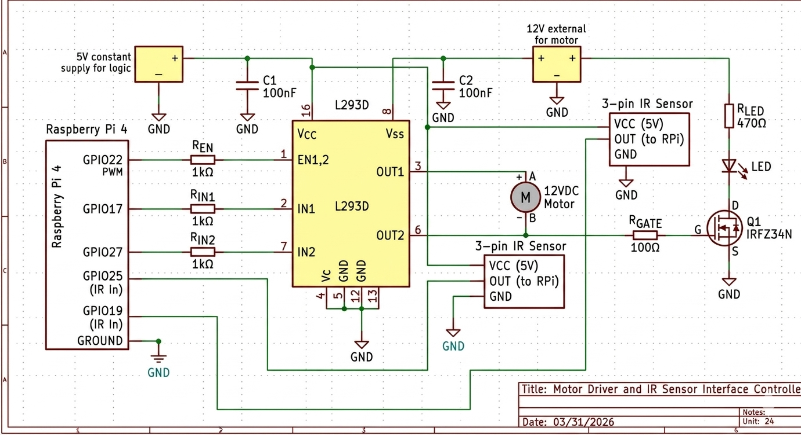

PARMCO 🚁⚙️
Phone App RP4 Motor Control. A full-stack embedded engineering project bridging mobile application development with low-level C and ARM Assembly hardware control.
View on GitHubPhone App RP4 Motor Control. A full-stack embedded engineering project bridging mobile application development with low-level C and ARM Assembly hardware control.
View on GitHubPARMCO consists of a real-time C control server running on a Raspberry Pi 4 and a Kotlin-based Android application. The Raspberry Pi drives a 12V DC motor via an L293D H-Bridge driver, while the Android app connects over Bluetooth RFCOMM to provide wireless control and live RPM telemetry.
The system is designed with low-latency control in mind, utilizing non-blocking RFCOMM servers via select() so incoming commands never stall the high-speed motor control loop.
The application supports three distinct operating modes to demonstrate both open-loop and closed-loop control systems:
Open-loop PWM control. The user directly sets the motor PWM via increment/decrement buttons in steps of 50, ranging from 0 to 1000. The feedback controller is bypassed.
Closed-loop speed hold. The app sends a target RPM, and the Pi runs an adaptive proportional controller written in ARM assembly to hold that speed automatically. The controller dynamically adjusts the PWM using gain scheduling based on the error magnitude.
Automatic target-matching. The Pi reads an external motor's RPM via a second IR sensor and dynamically matches the controlled motor's speed to it. No user input is required beyond selecting the mode.
MainActivity.kt.MEASURED_RPM and EXTERNAL_RPM data from the Pi once per second to update the UI.bt_motor_control.c handles BCM2835 GPIO hardware initialization and the Bluetooth RFCOMM server.feedback.S is a 32-bit ARM assembly function implementing the adaptive proportional controller.bluetooth-agent.service) allows the Pi to auto-accept Bluetooth pairings without user intervention.
The hardware interface relies on the BCM2835 library to map specific GPIO pins to the L293D H-Bridge and IR optical encoders.
Data is exchanged as newline-delimited ASCII strings over Bluetooth RFCOMM using the SPP UUID 00001101-0000-1000-8000-00805F9B34FB.
STATE:START), direction (DIR:FORWARD), mode selection, and target RPM settings.MEASURED_RPM and EXTERNAL_RPM updates once every second.